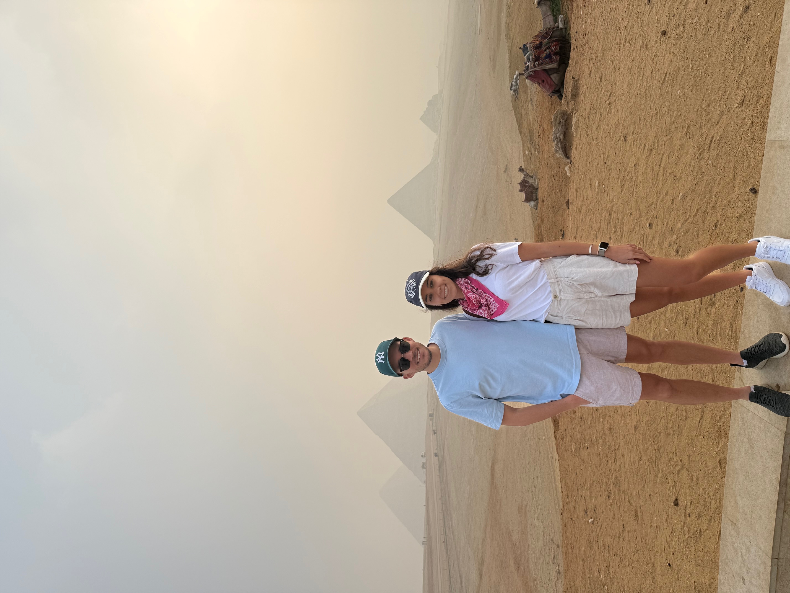

Interior Design
Spatial planning, bathroom and kitchen design, material palettes, furniture direction, lighting, and styling for residential interiors with character and calm.
Interior Design & Architectural Visualisation
Biophilic residential design shaped by light, materiality, atmosphere, and the emotional life of a space.
London · Dolomites · and beyond
Khoury Design is a sibling-led studio bringing together interior design, architectural visualisation, and spatial psychology for homes with warmth, clarity, and a strong relationship to nature.
Working between London and the Dolomites, the studio focuses on private residential interiors, chalets, wellness spaces, kitchens, bathrooms, and design-led renovations. Every project is approached through atmosphere, daylight, material balance, and the way a home supports daily life.
Spatial planning, bathroom and kitchen design, material palettes, furniture direction, lighting, and styling for residential interiors with character and calm.
High-end interior and exterior renders that communicate design intent with clarity, feeling, and enough precision to support real decisions.
Light-led, nature-connected spaces informed by planting, visual calm, material warmth, and a strong sensitivity to how environments affect mood and focus.
Concept development, presentations, design refinement, and visual communication for private clients, architects, designers, and selected developers.
We work across private homes, chalet and mountain properties, bathrooms, wellness areas, kitchens, living spaces, full-home renovations, and design-led residential developments.
Each project is priced individually according to scope, scale, and level of involvement. Enquiries begin with a conversation.
01
Megève, France
A large alpine residence developed through detailed visualisations spanning bathrooms, wellness spaces, and a lower-ground retreat of pool, sauna, hammam, and gym, framed by stone, timber, and soft architectural light.


02
Nyon, Switzerland
A lakeside apartment studied across kitchen and bathroom in day and evening light, with marble, brass, warm grey stone, and a balanced palette designed to feel calm, tactile, and resolved.


03
London, United Kingdom
A low-energy home shaped around light, garden connection, and a softer interior rhythm, spanning living spaces, bedrooms, and built bathroom work where visualisation carried the design clearly into site execution.


A visualisation can hold atmosphere, proportion, detailing, and finish choices in a form that clients and trades can read immediately. This powder room moved from render to built result with that clarity intact.


"The render clarified the room so completely that the build could carry the atmosphere forward without guesswork."Chiswick Eco House

Khoury Design is led by Stephan and Emilie Khoury, a sibling team whose strengths meet between image and reality, atmosphere and materiality, boldness and ease.
The studio brings together visualisation, interior design, and a strong sensitivity to how light, plants, proportion, texture, and spatial rhythm shape the way a home is felt and lived.

Design Direction, Visualisation, and Spatial Psychology · London
Stephan studied digital arts in California, with a minor in classical culture and archaeology, and later completed an MSc in Psychology at the University of Glasgow. His work focuses on atmosphere, visual communication, and the way light, materials, plants, and spatial rhythm shape mood, confidence, and daily ease.
He leads design direction and high-end visualisation, bringing clarity and feeling to interiors through imagery that clients can act on.
3ds Max · Corona · V-Ray · Unreal Engine 5 · ZBrush · Substance Painter
Interior Designer and Material Stylist · Dolomites
Emilie trained in fashion styling before completing a master's in interior design in Milan. She brings a refined eye for palette, furnishings, texture, and proportion, with a strong instinct for spaces that feel elegant, tactile, welcoming, and fully inhabited.
Her focus is the interior life of a project: material combinations, softness, structure, and the details that give a home warmth and coherence.
Residential interiors · Material palettes · Furnishings · Styling · Client-facing design
Spaces with emotional tone, spatial clarity, and a sense of presence from the moment you enter.
Stone, timber, textile, metal, greenery, and layered finishes chosen for depth, warmth, and visual balance.
Natural and artificial light studied together so rooms feel grounded, luminous, and alive through the day.
Homes designed around calm, vitality, biophilic connection, and the quiet order that supports daily life.
For interior design, visualisation, or collaborative project enquiries, email us with a short outline of your project and location.